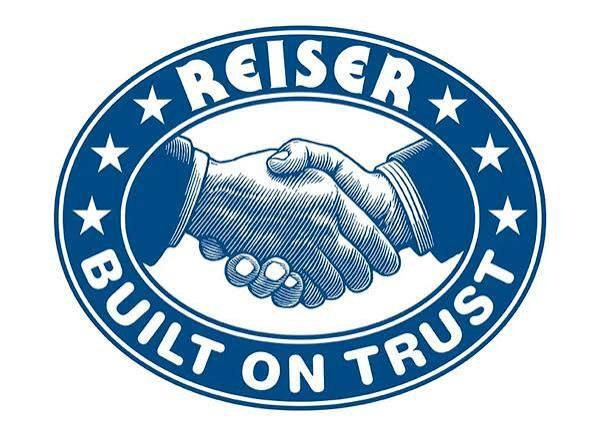
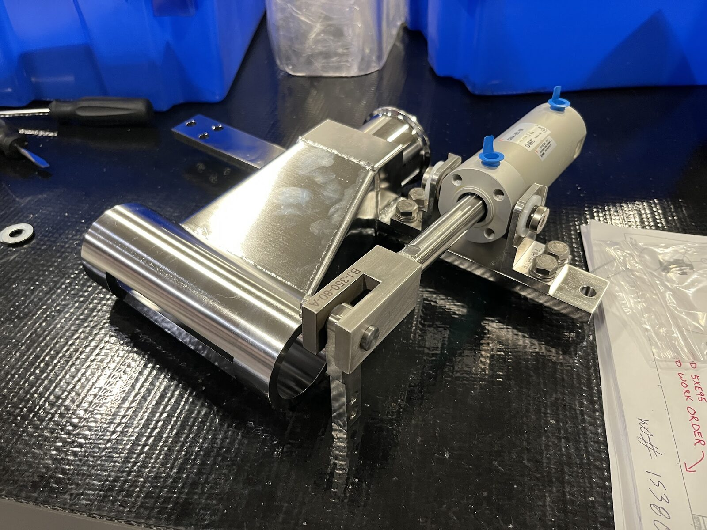
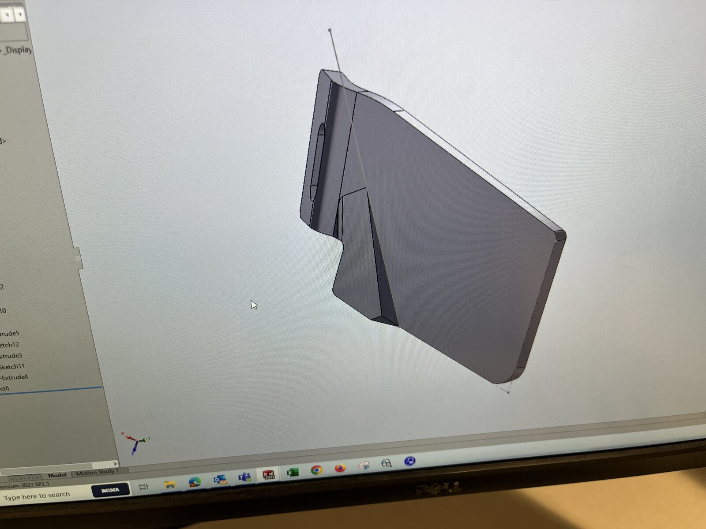
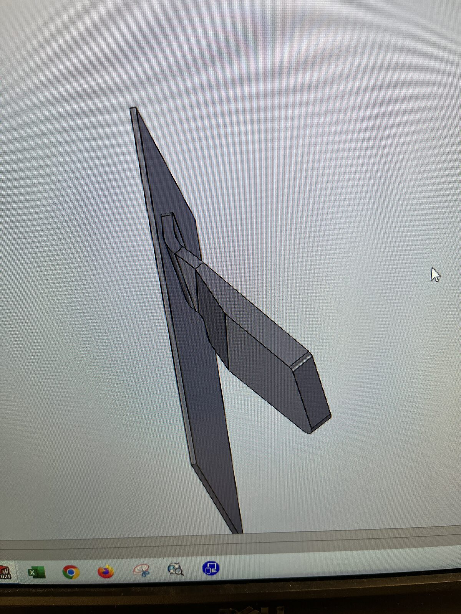
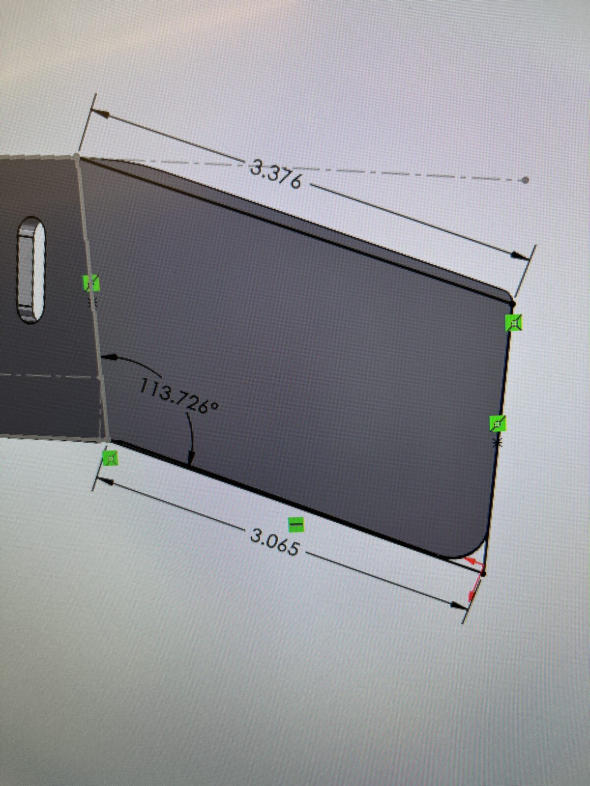

Reiser
Mechanical Engineering Co-op, Jan 2024 to June 2024

Reiser is a food processing and packaging equipment company that sells, services, and supports machinery for making products like sausage, meat, poultry, seafood, bakery goods, dairy, produce, and pet food. Founded in 1959 and based in Canton, Massachusetts, it serves customers in high-volume plants, so the equipment has to be durable and dependable through long production shifts.
My role
I supported the design and production of parts for industrial meat processing machines. My experience involved the following.
- Designing and modeling product extrusion inserts in SolidWorks, which were 3D printed and tested for customers
- Creating part callouts and dimensional drawings for parts and assemblies, organized in SolidWorks PDM
- Assembling water wheels and cutoffs for industrial meat processing machines that shipped to customers
I learned how designs move from a model to a part a customer actually uses. Printing and testing the extrusion inserts showed me how quickly a design gets tested on real products, and creating drawings in a shared system taught me that clear, organized documentation matters as much as the CAD itself.

Rounder Guard Attachment
The rounder is an industrial machine that shapes dough into balls. A gap at the machine's output was catching some of the dough as it exited, which interrupted the flow, so I designed a prototype attachment to fill the gap. I measured the gap and the surrounding surfaces with calipers, modeled the attachment in SolidWorks, and refined it through about four revisions to improve the fit before 3D printing the prototype. My co-op ended before I could test it on the machine, so I handed it to a coworker who took over testing to confirm it keeps the dough from catching. The four rounds taught me to check dimensions carefully and refine the fit rather than settle on the first model, and to hand off unfinished work clearly so someone else can carry it through.


